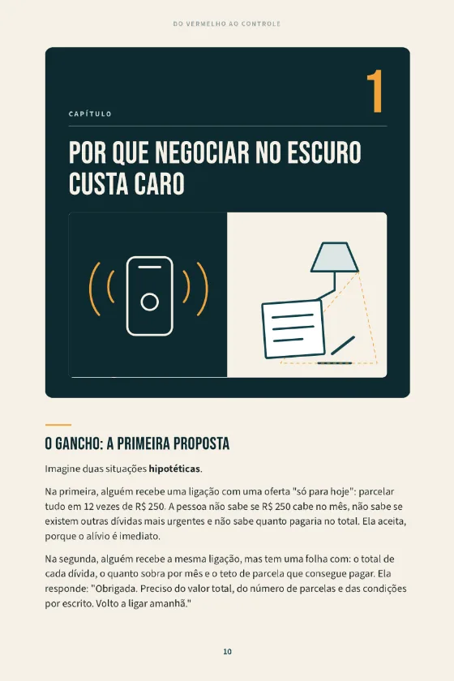
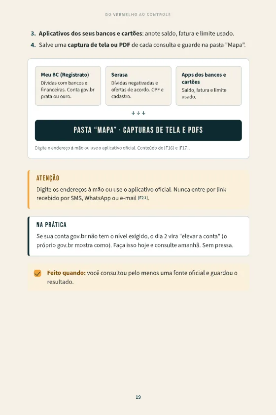
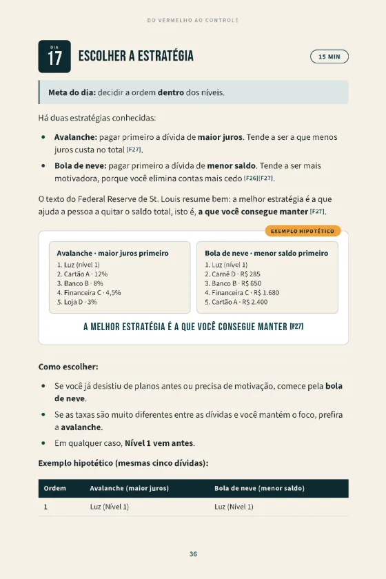
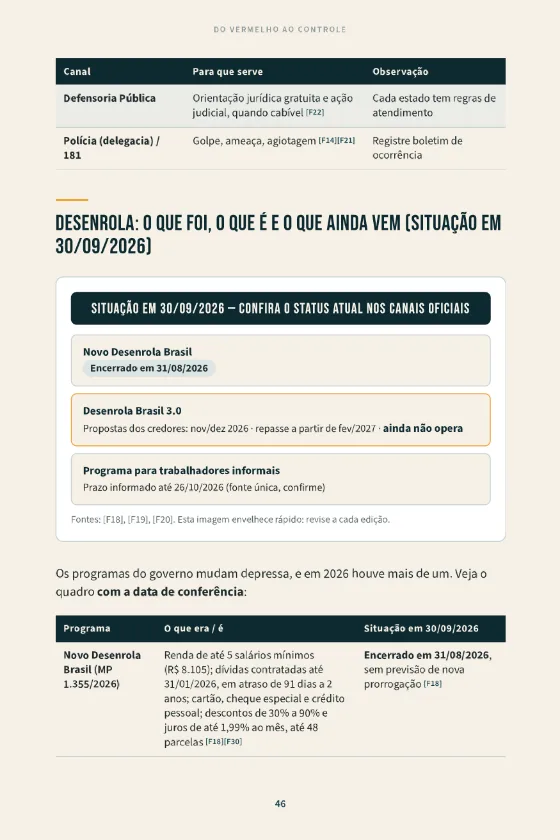
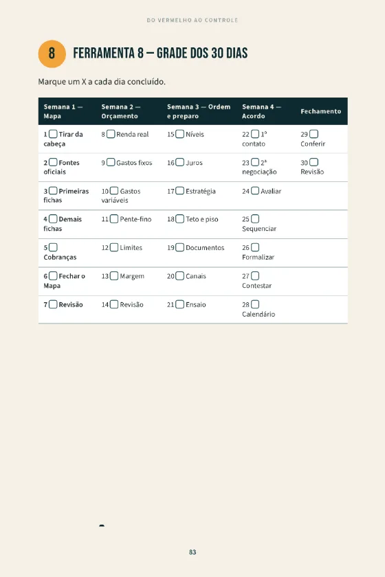
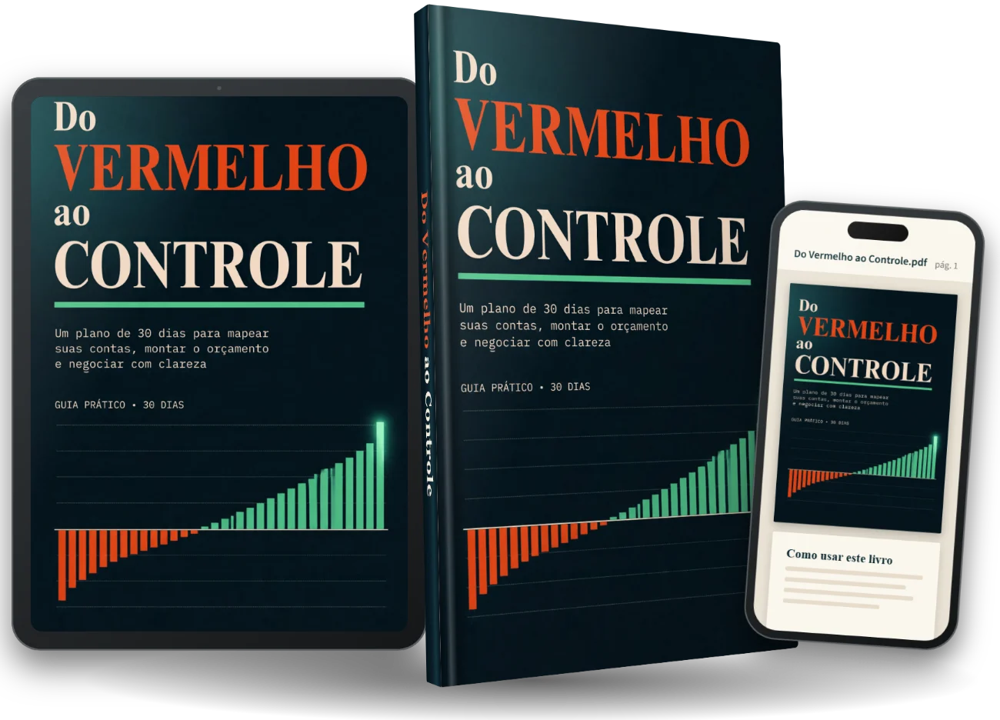

Sem mapa
Não sabe se R$ 250 cabe no mês. Não sabe o total a pagar. Aceita, porque o alívio é imediato.
Três meses depois, a parcela não cabe e vira novo atraso.
EBOOK · PLANO DE 30 DIAS · PDF
Um mapa das suas contas, um orçamento que cabe no mês e um roteiro de negociação, com uma tarefa de cerca de 10 minutos por dia.
Uma tarefa por dia · fichas e checklist para imprimir · 31 fontes oficiais · 7 dias de garantia
Exemplos com valores hipotéticos
Chega a notificação da fatura. O dedo vai até o aplicativo. E, antes de ver o valor, o dedo volta.
Se isso soa familiar, não é preguiça nem falta de caráter. É um comportamento conhecido: quando esperamos uma má notícia, tendemos a evitar a informação (o "efeito avestruz") F24. Olhar dói. Não olhar alivia, por um dia.
O problema é o preço desse alívio. Sem olhar, ninguém sabe quanto deve, a quem, com que juros e há quanto tempo. E sem essas respostas, qualquer conversa com um credor acontece no escuro.
Perguntas que muita gente faz na internet
Títulos de páginas públicas que respondem a buscas reais; texto literal.
Quase todas as respostas começam com a mesma palavra: "negocie". E é aí que mora o erro mais caro.
Imagine duas situações hipotéticas. A oferta é a mesma: "Só hoje: 12 parcelas de R$ 250."
Sem mapa
Não sabe se R$ 250 cabe no mês. Não sabe o total a pagar. Aceita, porque o alívio é imediato.
Três meses depois, a parcela não cabe e vira novo atraso.
Com mapa e teto
Sabe quanto sobra por mês e qual é o seu teto. Responde: "Preciso do valor total, do número de parcelas e das condições por escrito. Retorno amanhã."
Compara, decide com calma e só fecha o que cabe.
Exemplo hipotético, sem relação com nenhuma pessoa real.
A diferença não é esperteza. É informação organizada. Quem negocia sem ela costuma:
Aceitar a parcela que não cabe, e o acordo vira novo atraso.
Priorizar pelo barulho, não pelo risco: quem liga mais não é necessariamente a conta que mais pesa.
Pagar mais juros do que o necessário: R$ 1.000 a 8% ao mês viram cerca de R$ 1.260 em três meses (1.000 × 1,08 × 1,08 × 1,08). É aritmética, não previsão para o seu caso; mostra por que o número importa.
O tamanho do assunto
Esses números explicam por que o assunto vira notícia. Mas não ajudam a decidir o que fazer amanhã de manhã. Então qual é a ordem certa?
Método Mapa → Orçamento → Acordo
Dias 1 a 7
Uma folha com todas as contas: credor, valor, parcela, atraso e juros, inclusive as "invisíveis" (luz, condomínio, dívidas com pessoas)
Dias 8 a 14
Renda real, gastos reais e a margem do mês: o seu teto de parcela
Dias 15 a 21
O que vem primeiro (3 níveis; avalanche ou bola de neve) e o teto de cada credor
Dias 22 a 28
Negociação com roteiro de 6 passos, propostas comparadas por uma régua única, tudo por escrito
Dias 29 e 30
Conferência das baixas, revisão do mês e plano dos próximos 90 dias
Faça agora · 10 minutos, sem comprar nada
Escreva 3 números numa folha: quanto entra por mês, quanto sai de gasto que não dá para evitar e quantas contas em aberto você lembra. Subtraia o segundo do primeiro. Se der positivo, existe margem para trabalhar. Se der zero ou negativo, é informação, não sentença. Essa é a "linha de partida" do plano.
Amostra do produto
Pegue uma folha. Escreva tudo o que lembra de dever, sem valores. Pare quando o cronômetro tocar.
Calcule a margem mensal: renda real menos essenciais, menos ajustáveis mantidos, menos um pequeno colchão. Esse número será o seu teto em qualquer negociação.
Confirme o acordo por escrito, com valores, datas e número de protocolo. Antes de pagar qualquer boleto ou Pix, confira: o beneficiário é o credor real? Valor e vencimento batem com o combinado? A oferta chegou por um canal oficial que você abriu?
São 30 dias assim. Veja tudo o que vem junto.





Páginas reais do PDF.
Introdução
e entenda a ordem do plano.
Cap. 1
os três custos e o que o método muda.
Cap. 2
seu kit e 5 regras para cumprir 10 minutos por dia, inclusive nos dias ruins.
Cap. 3 · Semana 1 · dias 1 a 7
consultando fontes oficiais.
Cap. 4 · Semana 2 · dias 8 a 14
com um pente-fino sem sofrimento.
Cap. 5 · Semana 3 · dias 15 a 21
o teto por credor e as três frases para abrir a conversa.
Cap. 7 · Semana 4 · dias 22 a 28
compare propostas e formalize com segurança.
Cap. 6
cobrança, cadastros, juros, prescrição, superendividamento e a situação dos programas do governo (conferida em 30/09/2026).
Cap. 8
falso boleto, "taxa para liberar", link por mensagem.
Cap. 9 · dias 29 e 30
planeje os próximos 90 dias.
Cap. 10
reunião semanal de 15 minutos, dia do pagamento, regra do cartão.
Cap. 11
em 5 passos.
Para imprimir ou copiar
ficha da conta, mapa, orçamento, registro de contatos, comparador de propostas, calendário, revisão semanal e grade de 30 dias.
Baixe a Introdução, o Capítulo 1 e o Checklist de 1 página. Você faz os "3 números" e vê o jeito de escrever do guia antes de decidir. Sem cartão, sem compromisso.
Conteúdo educativo. Você receberá também alguns e-mails sobre o guia completo; cancele quando quiser. Não pedimos senha, token nem dados bancários.
Preferimos que você descubra isso agora a pedir reembolso depois.
Este guia foi escrito pela equipe editorial de O Recomeço Financeiro. Não somos banco, financeira, escritório de advocacia nem consultoria, e não negociamos nada em seu nome. O que fizemos: reunir fontes oficiais e estudos (Banco Central, Código de Defesa do Consumidor, tribunais, Ministério da Justiça, Serasa, pesquisa de comportamento) e transformar em tarefas curtas, dia após dia.
31 fontes ao fim do guia; cada dado ou regra no texto traz o número da fonte.
Leis, taxas e programas mudam: o guia diz quando conferir o site oficial.
Exemplos em reais são hipotéticos e assim identificados. Não são depoimentos.
E o guia ensina a reconhecer quem pede.
Este é um guia novo. Por isso, em vez de depoimentos, você vê o que dá para verificar: leia o Capítulo 1 grátis, confira as fontes, teste por 7 dias com devolução total. Só publicamos depoimentos reais, com autorização.
Ler o método é uma coisa. Estar ao telefone, com pressa na voz do outro lado, é outra. Os bônus existem para esse momento.
Bônus 1
Frases prontas para telefone, chat/WhatsApp (só canal oficial) e e-mail, por nível de prioridade; respostas para as pressões mais comuns ("é só hoje", "pague por este link"); modelos de texto para pedir extrato e contrato, contestar uma cobrança, pedir a baixa do registro e pedir reajuste antes de atrasar. Sem promessa de desconto: a conversa é sobre perguntar, anotar, comparar e decidir.
Resolve: "não sei o que dizer" e "tenho medo de aceitar o que não cabe".
Bônus 2
A grade dos 30 dias para marcar com X, os 3 números, a fórmula da margem, os 6 passos da negociação, as 7 checagens antes de aceitar e os sinais de golpe. Para imprimir e colar onde você veja todo dia.
Resolve: "começo animado e me perco".

| Você recebe | O que resolve |
|---|---|
| Ebook "Do Vermelho ao Controle": plano de 30 dias, 11 capítulos, exemplos, 8 fichas, 31 fontes | "Não sei por onde começar" |
| Bônus 1 · Scripts de negociação | "Não sei o que dizer" |
| Bônus 2 · Checklist de 1 página | "Esqueço o que fazer" |
| Garantia de 7 dias com devolução de 100% | "E se eu não gostar?" |
PreçoR$ 29,90
pagamento único · acesso por e-mail logo após a confirmação
Compra segura pela Kiwify · Garantia de 7 dias · Acesso imediato por e-mail
Para colocar o preço em perspectiva
Faça os 3 números, leia o mapa e execute as primeiras tarefas. Se, por qualquer motivo, você não gostar, devolvemos 100% do valor pago em até 7 dias, sem perguntas. É o seu direito de arrependimento nas compras pela internet (art. 49 do Código de Defesa do Consumidor) F6, e a gente o trata como argumento, não como obstáculo.
Para pedir: responda o e-mail da compra ou use a central da Kiwify ou chame @orecomeco.financeiro no Instagram.
A garantia é de devolução do valor. Não é garantia de resultado: o guia é educativo e não promete quitar dívidas, conseguir desconto ou limpar o nome.
Testar por 7 dias sem riscoNão. O guia não quita dívida, não limpa nome e não garante desconto: isso depende de acordo e pagamento com cada credor. O que ele faz é tirar você do escuro: um mapa, um orçamento e um roteiro, para decidir com números.
Porque o plano é feito para o pior dia, não para o melhor: tarefas de cerca de 10 minutos, um dia perdido não derruba o plano (você retoma onde parou) e o texto evita culpa. Criar hábito leva tempo variável (a média observada em um estudo foi de 66 dias, de 18 a 254) F28; por isso os passos são pequenos de propósito.
A maioria dos dias leva de 10 a 15 minutos. Alguns (consultar extratos, telefonar) pedem 20 ou 30 e estão marcados. Você só precisa de papel, caneta e celular. A planilha é opcional.
Você pode conferir antes de pagar: há um capítulo grátis (leia aqui), 31 fontes listadas, 7 dias de garantia e a compra é feita pela Kiwify. O guia nunca pede senha, token nem pagamento antecipado e ensina a identificar quem pede.
Não. Não somos banco, financeira, escritório de advocacia nem consultoria, e não negociamos nada em seu nome. Desconfie de quem cobra para "limpar o nome" ou "garantir vaga": é um dos sinais de golpe que o capítulo 8 ensina a reconhecer F17.
Tem, e parte é boa. Mas conteúdo solto não vem em ordem, nem com tarefa para cada dia, fichas prontas e roteiros de conversa. Se você prefere montar tudo sozinho, a amostra grátis mostra o começo. Se prefere o caminho pronto em 30 dias, é para isso que o guia existe.
O guia traz um quadro com a situação dos programas em 30/09/2026: o Novo Desenrola Brasil encerrou em 31/08/2026; o Desenrola 3.0 tem cronograma próprio (propostas dos credores em nov/dez de 2026 e repasse a partir de fev/2027, sujeito a mudança por ser medida provisória) F18F19. Não conte com desconto que ainda não foi oficializado para você. Confira sempre os canais oficiais.
Isso acontece e não é sentença. O capítulo 6 explica o procedimento de superendividamento (Lei 14.181/2021): audiência de conciliação com os credores e plano de pagamento de até cinco anos, preservando o mínimo existencial F8. A porta de entrada costuma ser o Procon ou a Defensoria Pública, gratuitos F22. Você leva o Mapa e o Orçamento que fez no plano.
O guia usa três níveis: 1) essencial ou risco imediato (moradia, luz, água, gás, dívida com garantia, o que está na Justiça), 2) caras (cartão no rotativo, cheque especial), 3) demais. Dentro disso, você escolhe avalanche (maior juros primeiro) ou bola de neve (menor saldo primeiro); a melhor é a que você consegue manter F27.
O plano usa o menor valor dos últimos três meses para a parte que varia, justamente para o orçamento não depender de um mês bom. Se a renda for muito irregular, o resultado do dia 13 será mais conservador, e isso é proposital.
O ebook é um PDF leve que abre no celular. As 8 fichas funcionam impressas ou copiadas num caderno. A planilha (opcional, oferecida no checkout) calcula margem, ordem e propostas, mas não é obrigatória.
Você recebe o acesso por e-mail logo após a confirmação do pagamento (ebook + bônus). Para reembolso, dentro de 7 dias, responda o e-mail da compra ou use a central da Kiwify. Devolvemos 100% do valor.
Ainda com dúvida? Leia o Capítulo 1 grátis ou comece agora.
Em 30 dias, você pode ter um mapa de tudo, um orçamento que cabe no mês e um roteiro para negociar sem aceitar a primeira parcela que aparecer. Sem prometer milagre: só colocando as coisas na ordem certa.
Ainda em dúvida? Ler o Capítulo 1 grátis →
Cada semana sem mapa é mais uma semana de decisões no escuro, sem saber quanto os juros estão custando.